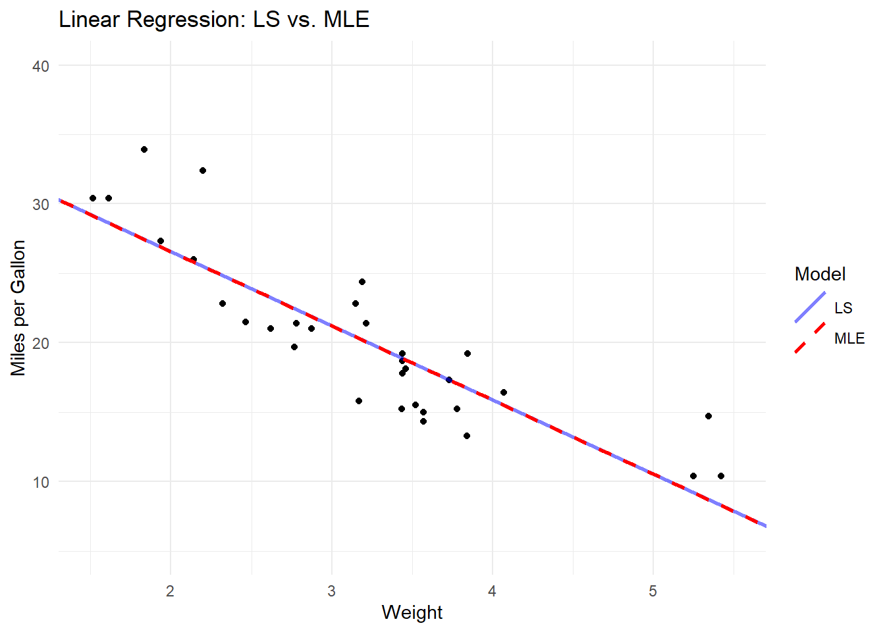

Linear regression is a foundational technique in statistical analysis and machine learning that helps us understand and quantify relationships between variables. As social scientists, we often aim to analyze the effect of certain factors on an outcome of interest. Linear regression provides us with a way to model these relationships, quantify their effects, and make predictions based on our findings. By mastering linear regression, social scientists can gain valuable insights into various phenomena, test hypotheses, and make data-driven decisions.
Usage and Importance
Linear regression is widely used in social science research for several reasons:
Simplicity: Linear regression is relatively easy to understand and implement, making it an accessible method for researchers across disciplines. Despite its simplicity, it can often provide valuable insights and predictions.
Interpretability: The coefficients obtained from linear regression have a clear interpretation, allowing researchers to understand the effect of each independent variable on the dependent variable.
Basis for Advanced Techniques: Linear regression serves as a foundation for more advanced statistical and machine learning techniques. Gaining a deep understanding of linear regression helps social scientists better understand and apply these more advanced methods.
Real-world Applications
Linear regression has a wide range of applications in social science research. Some examples include:
Economics: Linear regression can be used to study the impact of various factors on economic indicators, such as GDP growth, unemployment rate, and inflation.
Political Science: Researchers can use linear regression to analyze the effects of political factors on election outcomes, public opinion, or policy decisions.
Sociology: Linear regression can help us understand the relationship between social variables, such as education level, income, and various social outcomes like crime rates, health status, and life satisfaction.
Psychology: Researchers can use linear regression to study the effects of different psychological factors on human behavior, mental health, and well-being.
Education: Linear regression can be used to analyze the impact of various factors on educational outcomes, such as standardized test scores, graduation rates, and college enrollment.
Overall, linear regression is a versatile and powerful tool for social scientists, enabling them to gain insights into the relationships between variables and make evidence-based predictions.
Theory
Simple Linear Regression
Simple linear regression is a statistical method that helps us understand the relationship between one dependent variable (y) and one independent variable (x). It models the relationship as a linear function.
Equation:
\[
y = β_1 + β_2x + ε
\]
\(y\) : dependent variable (outcome)
\(x\) : independent variable (predictor)
\(β_1\) : intercept (value of y when x = 0)
\(β_2\) : slope (change in y for a one-unit increase in x)
\(ε\) : error term (difference between the predicted and observed values of y)
Multiple Linear Regression
Multiple linear regression is an extension of simple linear regression that allows us to model the relationship between one dependent variable (y) and multiple independent variables (x₁, x₂, …, xₙ). It is useful when we want to analyze the impact of several predictors on an outcome variable.
\(β₀\) : intercept (value of y when all x’s are 0)
\(β₁, β₂, …, βₙ\) : coefficients (change in y for a one-unit increase in the corresponding x)
\(ε\) : error term (difference between the predicted and observed values of y)
Assumptions of Linear Regression
Linearity: The relationship between the dependent variable and the independent variables is linear.
Independence: The observations in the dataset are independent of each other.
Homoscedasticity: The variance of the error term is constant for all values of the independent variables.
Normality: The error term follows a normal distribution.
No multicollinearity: The independent variables are not highly correlated with each other.
Coefficient Estimation: Least Squares (LS) Method
Minimize the sum of the squared differences between the observed and predicted values of the dependent variable.
Formula:
\[
β = (X'X)^{-1}X'y
\]where X is the matrix of independent variables, y is the dependent variable, and β is the vector of coefficients.
Model Evaluation Metrics
R-squared (Coefficient of Determination): Proportion of the variance in the dependent variable that can be explained by the independent variables. Ranges from 0 to 1.
\[
R^2 = 1- \frac{SSE}{SST}
\]
\[
SSE = \sum(y_i - \hat{y_i})^2
\]
\[
SST=\sum(y_i - \bar{y_i})^2
\]
where SSE is the sum of squared errors and SST is the sum of squared total
Adjusted R-squared: R-squared adjusted for the number of predictors in the model. Useful for comparing models with different numbers of predictors.
\[
Adj.R^2=1-\frac{(1-R^2)(N-1)}{N-p-1}
\]
where \(R^2\) is sample R-squared, \(N\) is Total Sample Size, and \(p\) is the number of independent variables
Root Mean Squared Error (RMSE): The square root of the average squared differences between the observed and predicted values of the dependent variable. A measure of the model’s prediction accuracy.
where N is the number of data points (observations)
Pop-up Quizzes
What is the main objective of simple linear regression?
To predict the value of a dependent variable based on the values of multiple independent variables.
To predict the value of a dependent variable based on the value of one independent variable.
To predict the values of independent variables based on the value of a dependent variable.
To find the correlation between two independent variables.
In a multiple linear regression model, what happens when two or more independent variables are highly correlated with each other?
The model becomes more accurate.
The model becomes more interpretable.
Multicollinearity occurs, which can affect the stability and interpretation of the coefficients.
The model’s R-squared value decreases significantly.
Which of the following is NOT an assumption of linear regression?
Linearity
Independence
Homoscedasticity
Exponential distribution of the error term
In a simple linear regression model with the equation y = β₀ + β₁x + ε, what does β₁ represent?
The intercept of the model, or the value of y when x = 0.
The slope of the model, or the change in y for a one-unit increase in x.
The error term, or the difference between the predicted and observed values of y.
The coefficient of determination, or the proportion of the variance in y explained by x.
Which of the following metrics can be used to evaluate the performance of a linear regression model?
R-squared
Adjusted R-squared
Root Mean Squared Error (RMSE)
All of the above
Answers: bcdbd
Hands-on Practice
For this hands-on practice, we will use the mtcars dataset, which is built into R. The dataset contains information about various car models, including miles per gallon (mpg), number of cylinders (cyl), horsepower (hp), and weight (wt). The goal is to predict miles per gallon based on the number of cylinders, horsepower, and weight using linear regression.
# Load necessary librarieslibrary(tidyverse)
── Attaching core tidyverse packages ──────────────────────── tidyverse 2.0.0 ──
✔ dplyr 1.1.4 ✔ readr 2.1.5
✔ forcats 1.0.0 ✔ stringr 1.5.1
✔ ggplot2 3.5.1 ✔ tibble 3.2.1
✔ lubridate 1.9.3 ✔ tidyr 1.3.1
✔ purrr 1.0.2
── Conflicts ────────────────────────────────────────── tidyverse_conflicts() ──
✖ dplyr::filter() masks stats::filter()
✖ dplyr::lag() masks stats::lag()
ℹ Use the conflicted package (<http://conflicted.r-lib.org/>) to force all conflicts to become errors
# Load the 'mtcars' datasetdata(mtcars)# View the first few rows of the datasethead(mtcars)
mpg cyl disp hp
Min. :10.40 Min. :4.000 Min. : 71.1 Min. : 52.0
1st Qu.:15.43 1st Qu.:4.000 1st Qu.:120.8 1st Qu.: 96.5
Median :19.20 Median :6.000 Median :196.3 Median :123.0
Mean :20.09 Mean :6.188 Mean :230.7 Mean :146.7
3rd Qu.:22.80 3rd Qu.:8.000 3rd Qu.:326.0 3rd Qu.:180.0
Max. :33.90 Max. :8.000 Max. :472.0 Max. :335.0
drat wt qsec vs
Min. :2.760 Min. :1.513 Min. :14.50 Min. :0.0000
1st Qu.:3.080 1st Qu.:2.581 1st Qu.:16.89 1st Qu.:0.0000
Median :3.695 Median :3.325 Median :17.71 Median :0.0000
Mean :3.597 Mean :3.217 Mean :17.85 Mean :0.4375
3rd Qu.:3.920 3rd Qu.:3.610 3rd Qu.:18.90 3rd Qu.:1.0000
Max. :4.930 Max. :5.424 Max. :22.90 Max. :1.0000
am gear carb
Min. :0.0000 Min. :3.000 Min. :1.000
1st Qu.:0.0000 1st Qu.:3.000 1st Qu.:2.000
Median :0.0000 Median :4.000 Median :2.000
Mean :0.4062 Mean :3.688 Mean :2.812
3rd Qu.:1.0000 3rd Qu.:4.000 3rd Qu.:4.000
Max. :1.0000 Max. :5.000 Max. :8.000
# Visualize relationships between variables using scatterplotspairs(mtcars[, c("mpg", "cyl", "hp", "wt")])
Simple Linear Regression in R (Predicting mpg based on weight)
# Fit a simple linear regression modelsimple_model <-lm(mpg ~ wt, data = mtcars)# Model summary and interpretationsummary(simple_model)
Call:
lm(formula = mpg ~ wt, data = mtcars)
Residuals:
Min 1Q Median 3Q Max
-4.5432 -2.3647 -0.1252 1.4096 6.8727
Coefficients:
Estimate Std. Error t value Pr(>|t|)
(Intercept) 37.2851 1.8776 19.858 < 2e-16 ***
wt -5.3445 0.5591 -9.559 1.29e-10 ***
---
Signif. codes: 0 '***' 0.001 '**' 0.01 '*' 0.05 '.' 0.1 ' ' 1
Residual standard error: 3.046 on 30 degrees of freedom
Multiple R-squared: 0.7528, Adjusted R-squared: 0.7446
F-statistic: 91.38 on 1 and 30 DF, p-value: 1.294e-10
# Model diagnostics (residuals vs. fitted values)plot(simple_model, which =1)
Hypothesis Testing and Statistical Significance in Linear Regression
T-statistics and p-values are essential concepts in statistical hypothesis testing and linear regression analysis.
T-statistics
A t-statistic is a measure of how many standard deviations a regression coefficient is from zero. It is used to test the null hypothesis that there is no relationship between the independent and dependent variables (i.e., the coefficient is zero). A higher t-statistic value indicates a stronger relationship between the variables.
The t-statistic for a regression coefficient can be calculated as:
\[
t = \frac{\beta - H₀}{se(\beta)}
\]
where \(t\) is the t-statistic, \(\beta\) is the estimated regression coefficient, \(H₀\) is the null hypothesis value (usually 0), and \(se(\beta)\) is the standard error of the estimated coefficient.
See appendix (further study part) if you want to dig in more about the way of estimating \(se(\beta)\).
Note
t-통계량은 클 수록 좋음: 분자는 클 수록, 분모는 작을 수록
분자가 크려면: 회귀 계수 (Beta의 추정값)이 커야함
분모가 작으려면: 회귀 계수의 표준 오차가 작아야함 (표준 오차 추정법은 부록 참고)
회귀 계수의 표준 오차가 작으려면: \(se(\beta)\) = MSE / (X의 표준편차 * 표본수) 이므로 MSE가 작아야 하고 표본수가 커야함.
종합하면, 회귀 계수가 크고, MSE가 작고, 표본 수가 커질 수록 t-통계량이 커진다
P-values
A p-value is the probability of obtaining a test statistic as extreme as the observed value under the null hypothesis. It helps us determine the statistical significance of a regression coefficient. In general, a smaller p-value (typically ≤ 0.05) indicates strong evidence against the null hypothesis, suggesting that the coefficient is significantly different from zero.
To calculate the p-value for a t-statistic, we use the cumulative distribution function (CDF) of the t-distribution with n - k degrees of freedom, where n is the number of observations and k is the number of estimated coefficients (including the intercept).
\[
P(T > |t|) = 1 - CDF(t, df = n - k)
\]
Multiple Linear Regression in R (Adding number of cylinders and horsepower as predictors)
# Fit a multiple linear regression modelmultiple_model <-lm(mpg ~ cyl + hp + wt, data = mtcars)# Model summary and interpretationsummary(multiple_model)
Call:
lm(formula = mpg ~ cyl + hp + wt, data = mtcars)
Residuals:
Min 1Q Median 3Q Max
-3.9290 -1.5598 -0.5311 1.1850 5.8986
Coefficients:
Estimate Std. Error t value Pr(>|t|)
(Intercept) 38.75179 1.78686 21.687 < 2e-16 ***
cyl -0.94162 0.55092 -1.709 0.098480 .
hp -0.01804 0.01188 -1.519 0.140015
wt -3.16697 0.74058 -4.276 0.000199 ***
---
Signif. codes: 0 '***' 0.001 '**' 0.01 '*' 0.05 '.' 0.1 ' ' 1
Residual standard error: 2.512 on 28 degrees of freedom
Multiple R-squared: 0.8431, Adjusted R-squared: 0.8263
F-statistic: 50.17 on 3 and 28 DF, p-value: 2.184e-11
# Model diagnostics (residuals vs. fitted values)plot(multiple_model, which =1)
Model Evaluation and Comparison
# Calculate R-squared and adjusted R-squared for both modelssimple_r_squared <-summary(simple_model)$r.squaredsimple_adj_r_squared <-summary(simple_model)$adj.r.squaredmultiple_r_squared <-summary(multiple_model)$r.squaredmultiple_adj_r_squared <-summary(multiple_model)$adj.r.squared# Compare R-squared and adjusted R-squared valuescat("Simple Model - R-squared:", simple_r_squared, "Adjusted R-squared:", simple_adj_r_squared, "\n")
Simple Model - R-squared: 0.7528328 Adjusted R-squared: 0.7445939
cat("Multiple Model - R-squared:", multiple_r_squared, "Adjusted R-squared:", multiple_adj_r_squared, "\n")
Multiple Model - R-squared: 0.84315 Adjusted R-squared: 0.8263446
Model Predictions
# Make predictions using the multiple linear regression modelnew_data <-data.frame(cyl =c(4, 6, 8),hp =c(100, 150, 200),wt =c(2.5, 3.0, 3.5))predicted_mpg <-predict(multiple_model, newdata = new_data)# View predicted mpg valuespredicted_mpg
1 2 3
25.26408 20.89545 16.52683
Addressing Multi-collinearity
# Check for multicollinearity using the Variance Inflation Factor (VIF)library(car)
Loading required package: carData
Attaching package: 'car'
The following object is masked from 'package:dplyr':
recode
The following object is masked from 'package:purrr':
some
vif(multiple_model)
cyl hp wt
4.757456 3.258481 2.580486
Variance Inflation Factor (VIF) is a measure used to detect the presence and severity of multicollinearity in a multiple linear regression model. Multicollinearity occurs when two or more independent variables in the model are highly correlated, which can lead to instability in the estimated regression coefficients and make it difficult to interpret their individual effects on the dependent variable.
If VIF values are significantly greater than 1 (> 5 or 10), consider removing or combining correlated predictors
VIF for the j-th independent variable can be calculated as:
\[
VIF(j) = \frac{1}{1 - R²(j)}
\]
Here, \(R²(j)\) is the coefficient of determination (R-squared) of the regression model when the j-th independent variable is regressed on all the other independent variables in the model. In other words, \(R²(j)\) measures the proportion of variance in the j-th independent variable that can be explained by the other independent variables.
If the VIF value for a particular independent variable is close to 1, it means that there is no significant multicollinearity between that variable and the other independent variables. As the VIF value increases, it suggests a higher degree of multicollinearity.
The general interpretation of VIF values is as follows:
VIF = 1: No multicollinearity
VIF between 1 and 5: Moderate multicollinearity
VIF greater than 5 or 10: High multicollinearity (threshold values may vary depending on the field of study)
If high multicollinearity is detected, it is often advisable to address the issue by removing or combining correlated predictors, or by using regularization techniques such as Lasso, Ridge, or Elastic Net regression. This can help improve the stability and interpretability of the regression coefficients.
Optional: Regularization techniques (Lasso, Ridge, and Elastic Net)
Lasso, Ridge, and Elastic Net are regularization techniques used in linear regression models to address issues like multicollinearity, overfitting, and feature selection. They work by adding a penalty term to the linear regression’s objective function, which helps to shrink the coefficients towards zero and simplify the model. Here’s a brief explanation of each technique along with the relevant equations:
Lasso Regression (Least Absolute Shrinkage and Selection Operator)
Lasso regression adds an L1 penalty term to the linear regression’s objective function. The L1 penalty term is the sum of the absolute values of the coefficients. The objective function for Lasso regression is:
\[
Objective = RSS + λ Σ|β_j|
\]
where:
\(RSS\) is the residual sum of squares.
\(β_j\) represents the j-th coefficient in the model.
\(λ\) (lambda) is the regularization parameter that controls the strength of the L1 penalty. Higher values of λ result in more shrinkage and simpler models.
Lasso regression can drive some coefficients to zero, effectively performing feature selection by excluding irrelevant variables from the model.
Ridge Regression
Ridge regression adds an L2 penalty term to the linear regression’s objective function. The L2 penalty term is the sum of the squares of the coefficients. The objective function for Ridge regression is:
\[
Objective = RSS + λ Σ(β_j)^2
\]
where:
\(RSS\) is the residual sum of squares.
\(β_j\) represents the j-th coefficient in the model.
\(λ\) (lambda) is the regularization parameter that controls the strength of the L2 penalty. Higher values of λ result in more shrinkage and simpler models.
Ridge regression doesn’t drive coefficients to zero but can shrink them close to zero, leading to a more stable and interpretable model, especially when multicollinearity is present.
Elastic Net Regression
Elastic Net regression combines both L1 and L2 penalty terms, effectively blending Lasso and Ridge regression (진리의 반반). The objective function for Elastic Net regression is:
\(β_j\) represents the j-th coefficient in the model.
\(λ\) (lambda) is the regularization parameter that controls the overall strength of the penalty.
\(α\) (alpha) is the mixing parameter that determines the balance between L1 (Lasso) and L2 (Ridge) penalties.
α = 1 results in Lasso regression,
α = 0 results in Ridge regression,
and values between 0 and 1 produce a mix of both.
Elastic Net regression can be useful when there are many correlated predictors, as it can perform feature selection like Lasso while maintaining the stability and robustness of Ridge regression.
Let’s learn how to code lasso, ridge, and elastic net regression.
# Load necessary librarylibrary(glmnet)
Loading required package: Matrix
Attaching package: 'Matrix'
The following objects are masked from 'package:tidyr':
expand, pack, unpack
Loaded glmnet 4.1-8
# Prepare data for regularizationx <-model.matrix(mpg ~ cyl + hp + wt, data = mtcars)[, -1]y <- mtcars$mpg# Fit Lasso, Ridge, and Elastic Net modelslasso_model <-glmnet(x, y, alpha =1)ridge_model <-glmnet(x, y, alpha =0)elastic_net_model <-glmnet(x, y, alpha =0.5)# Cross-validation to find the optimal lambda valuecv_lasso <-cv.glmnet(x, y, alpha =1)cv_ridge <-cv.glmnet(x, y, alpha =0)cv_elastic_net <-cv.glmnet(x, y, alpha =0.5)# Model summary and interpretationcat("Lasso - Optimal Lambda:", cv_lasso$lambda.min, "\n")
cat("Elastic Net - Optimal Lambda:", cv_elastic_net$lambda.min, "\n")
Elastic Net - Optimal Lambda: 0.3614407
# Make predictions using Lasso, Ridge, and Elastic Net models:# Create new data for predictionsnew_data <-data.frame(cyl =c(4, 6, 8),hp =c(100, 150, 200),wt =c(2.5, 3.0, 3.5))# Prepare new data for predictionsnew_data_x <-model.matrix(~ cyl + hp + wt, data = new_data)[, -1]# Make predictionslasso_predictions <-predict(cv_lasso, new_data_x, s ="lambda.min")ridge_predictions <-predict(cv_ridge, new_data_x, s ="lambda.min")elastic_net_predictions <-predict(cv_elastic_net, new_data_x, s ="lambda.min")# View predictionscat("Lasso Predictions:", lasso_predictions, "\n")
cat("Elastic Net Predictions:", elastic_net_predictions, "\n")
Elastic Net Predictions: 25.05218 20.84932 16.64645
Conclusion
In this hands-on practice, we used the ‘mtcars’ dataset to predict miles per gallon (mpg) based on the number of cylinders, horsepower, and weight of a car. We started with a simple linear regression model using only weight as a predictor and then moved to a multiple linear regression model with three predictors. We also explored regularization techniques and made predictions using our multiple linear regression model.
Remember to always perform exploratory data analysis and check the assumptions of linear regression before fitting your models. Also, consider applying regularization techniques when multicollinearity is present or when the model is overfitting the data.
For your further study
Derivation of the Coefficient: Least Squares (LS) Method
The goal of the Least Squares (LS) method is to minimize the sum of the squared differences between the observed and predicted values of the dependent variable. This method is commonly used in linear regression to estimate the coefficients \(\beta\).
1. Objective Function
We aim to minimize the following objective function:
Where: - \(y\) is the vector of observed dependent variable values. - \(X\) is the matrix of independent variables. - \(\beta\) is the vector of coefficients. - \(\hat{y_i} = X\beta\) is the vector of predicted values.
2. Expanding the Objective Function
Expand the objective function:
\[
(y - X\beta)^T (y - X\beta) = y^T y - 2 \beta^T X^T y + \beta^T X^T X \beta
\]
3. Taking the Derivative
To minimize the objective function, take the derivative with respect to \(\beta\) and set it equal to 0:
\[
\frac{\partial}{\partial \beta} \left( y^T y - 2 \beta^T X^T y + \beta^T X^T X \beta \right) = 0
\]
This simplifies to:
\[
-2 X^T y + 2 X^T X \beta = 0
\]
4. Solving for beta
Rearrange the equation to solve for \(\beta\):
\[
X^T X \beta = X^T y
\]
Finally, solve for \(\beta\):
\[
\beta = (X^T X)^{-1} X^T y
\]
Steps to Estimate the Standard Error \(\text{SE}(\hat{\beta})\)
Residual Sum of Squares (RSS): First, compute the residuals (the difference between the observed values \(y\) and the predicted values \(\hat{y} = X\hat{\beta}\)) and the residual sum of squares.
\(X\) is the design matrix (the matrix of independent variables, including the intercept).
\(X^T X\) is the matrix product of \(X\) transposed and \(X\).
\((X^T X)^{-1}\) is the inverse of the matrix \(X^T X\).
Standard Error of\(\hat{\beta}\): The standard error of each coefficient \(\hat{\beta}_j\) (where \(j = 1, 2, ..., p\)) is the square root of the diagonal elements of the variance-covariance matrix:
\((X^T X)^{-1}_{jj}\) is the \(j\)-th diagonal element of the matrix \((X^T X)^{-1}\).
Practice in R
# Generate some example dataset.seed(123) # For reproducibility# Create a matrix of independent variables (X) with an interceptn <-100# Number of observationsp <-3# Number of predictors# Create a matrix X of independent variables with an interceptX <-cbind(1, matrix(rnorm(n * (p -1)), n, p -1)) # X includes intercept# Create a true beta (coefficients)beta_true <-c(2, 1.5, -3) # True coefficients for the model# intercept: 2# B1: 1.5# B2: -3# Generate the dependent variable (y) with some noisey <- X %*% beta_true +rnorm(n)# Compute beta using the formula: beta = (X'X)^(-1) X'y# Step 1: Compute X'X (transpose of X times X)XtX <-t(X) %*% X# Step 2: Compute X'y (transpose of X times y)Xty <-t(X) %*% y# Step 3: Compute the inverse of X'XXtX_inv <-solve(XtX)# Step 4: Compute the estimated betabeta_hat <- XtX_inv %*% Xty# Print the estimated coefficientsprint("Estimated beta coefficients:")
[1] "Estimated beta coefficients:"
print(beta_hat)
[,1]
[1,] 2.135065
[2,] 1.366828
[3,] -2.976189
# Compare the estimated beta with the true betaprint("True beta coefficients:")
[1] "True beta coefficients:"
print(beta_true)
[1] 2.0 1.5 -3.0
################################################# Check how well the model fitsy_hat <- X %*% beta_hat # Predicted values# Compute residualsresiduals <- y - y_hat# Print residual sum of squares (RSS)rss <-sum(residuals^2)print(paste("Residual Sum of Squares (RSS):", rss))
[1] "Residual Sum of Squares (RSS): 87.7818656295526"
# Step 5: Estimate variance of residuals (sigma^2)sigma2_hat <- rss / (n - p)# Step 6: Calculate standard errors of beta_hatvar_beta_hat <- sigma2_hat *solve(t(X) %*% X)se_beta_hat <-sqrt(diag(var_beta_hat))# --- Using lm() to fit the model ---# Create a data frame to use with lm()df <-data.frame(y = y, X1 = X[, 2], X2 = X[, 3])# Fit the linear model using lm()model_lm <-lm(y ~ X1 + X2, data = df)# Print the estimated coefficients (lm())print("Estimated beta coefficients (lm):")
[1] "Estimated beta coefficients (lm):"
print(coef(model_lm))
(Intercept) X1 X2
2.135065 1.366828 -2.976189
summary(model_lm)
Call:
lm(formula = y ~ X1 + X2, data = df)
Residuals:
Min 1Q Median 3Q Max
-1.8730 -0.6607 -0.1245 0.6214 2.0798
Coefficients:
Estimate Std. Error t value Pr(>|t|)
(Intercept) 2.13507 0.09614 22.21 <2e-16 ***
X1 1.36683 0.10487 13.03 <2e-16 ***
X2 -2.97619 0.09899 -30.06 <2e-16 ***
---
Signif. codes: 0 '***' 0.001 '**' 0.01 '*' 0.05 '.' 0.1 ' ' 1
Residual standard error: 0.9513 on 97 degrees of freedom
Multiple R-squared: 0.92, Adjusted R-squared: 0.9183
F-statistic: 557.6 on 2 and 97 DF, p-value: < 2.2e-16
Maximum Likelihood Estimation
In linear regression, the method of least squares is commonly used to estimate the coefficients of the regression model. However, there is another estimation method called Maximum Likelihood Estimation (MLE) that can be used as an alternative to least squares. In this optional material, we will introduce the concept of MLE, explain how it works, and discuss its advantages and disadvantages compared to least squares.
Maximum Likelihood Estimation
Maximum Likelihood Estimation is a statistical method used to estimate the parameters of a model by finding the values that maximize the likelihood function. The likelihood function measures how likely the observed data is, given the parameters of the model. In the context of linear regression, MLE seeks to find the values of the coefficients that maximize the likelihood of observing the data, assuming that the error terms follow a normal distribution
MLE in Linear Regression
Let’s consider the linear regression model:
\[
y_i = β_0 + β_1 x_i + ε_i
\]
where \(y_i\) is the dependent variable, \(x_i\) is the independent variable, \(β_0\) and \(β_1\) are the regression coefficients, and \(ε_i\) is the error term.
Assuming that the error terms \(ε_i\) are normally distributed with mean 0 and constant variance \(σ^2\), the probability density function (PDF) of the normal distribution for a single observation is:
The goal of MLE is to find the values of \(β_0\), \(β_1\), and \(σ^2\) that maximize the log-likelihood function.
Practice in R
# Generate some example dataset.seed(123) # For reproducibility# Create a matrix of independent variables (X) with an interceptn <-100# Number of observationsp <-3# Number of predictors# Create a matrix X of independent variables with an interceptX <-cbind(1, matrix(rnorm(n * (p -1)), n, p -1)) # X includes intercept# Create a true beta (coefficients)beta_true <-c(2, 1.5, -3) # True coefficients for the model# Generate the dependent variable (y) with some noisey <- X %*% beta_true +rnorm(n)# --- Define the log-likelihood function for linear regression ---log_likelihood <-function(params) { beta <- params[1:p] # Extract beta parameters sigma2 <- params[p +1] # Extract variance (sigma^2)# Calculate predicted values y_hat <- X %*% beta# Calculate residuals residuals <- y - y_hat# Compute the log-likelihood log_like <--(n /2) *log(2* pi * sigma2) - (1/ (2* sigma2)) *sum(residuals^2)return(-log_like) # Return negative log-likelihood for minimization}# --- Initial parameter guesses for beta and sigma^2 ---init_params <-c(rep(0, p), var(y)) # Initial guesses: zeros for beta, var(y) for sigma^2# --- Perform MLE using optim to minimize the negative log-likelihood ---mle_results <-optim(par = init_params, fn = log_likelihood, method ="BFGS")
Warning in log(2 * pi * sigma2): NaNs produced
Warning in log(2 * pi * sigma2): NaNs produced
Warning in log(2 * pi * sigma2): NaNs produced
Warning in log(2 * pi * sigma2): NaNs produced
Warning in log(2 * pi * sigma2): NaNs produced
Warning in log(2 * pi * sigma2): NaNs produced
Warning in log(2 * pi * sigma2): NaNs produced
Warning in log(2 * pi * sigma2): NaNs produced
Warning in log(2 * pi * sigma2): NaNs produced
# Extract estimated betas and sigma^2beta_mle <- mle_results$par[1:p]sigma2_mle <- mle_results$par[p +1]# Print the resultsprint("Estimated beta coefficients (MLE):")
# Compare the estimated betas (MLE) with the true betasprint("True beta coefficients:")
[1] "True beta coefficients:"
print(beta_true)
[1] 2.0 1.5 -3.0
# Check how well the model fits using MLEy_hat_mle <- X %*% beta_mle # Predicted values using MLE betas# Compute residual sum of squares (RSS) for MLErss_mle <-sum((y - y_hat_mle)^2)print(paste("Residual Sum of Squares (RSS, MLE):", rss_mle))
[1] "Residual Sum of Squares (RSS, MLE): 87.7818656295527"
The optim() function in R is a general-purpose optimization function. Its role is to find the minimum or maximum of a given objective function. In the case of MLE, we want to maximize the log-likelihood (or equivalently minimize the negative log-likelihood) to find the best estimates for our model parameters β and \(\sigma^2\).
The optimization problem is often framed as minimizing some objective, so in MLE, we minimize the negative log-likelihood. The optim() function adjusts the parameter values to reduce the negative log-likelihood as much as possible, eventually finding the optimal estimates.
par = init_params: This argument provides the initial guesses for the parameters β and \(\sigma^2\) that we are trying to estimate. In our case:
We initialize β with zeros (or some other sensible guess).
We initialize \(\sigma^2\) with the variance of y, since it’s a reasonable starting point for the variance of the errors.
fn = log_likelihood: This is the objective function we are trying to minimize. In our case, it’s the negative log-likelihood function (log_likelihood). The goal is to minimize this function by adjusting the parameters β and \(\sigma^2\)
method = "BFGS": This specifies the optimization method. BFGS stands for Broyden–Fletcher–Goldfarb–Shanno algorithm, which is a popular method used for optimization when the objective function is smooth and differentiable (as is the case here). The BFGS algorithm is well-suited for problems like this because it approximates the second derivatives of the objective function (related to curvature), making it efficient for finding local minima.
What Happens Inside optim()?
Initial Step:
The function starts with the initial guesses for β and \(\sigma^2\) provided in init_params.
Evaluate the Objective Function:
optim() calculates the negative log-likelihood for the current parameter values using the log_likelihood() function.
It evaluates how far off the current guess is by computing the residuals \(y - X\beta\) and using those residuals to calculate the likelihood.
Iterative Optimization:
optim() adjusts the parameter values iteratively. It evaluates the gradient (the direction in which the objective function decreases most quickly) and step size (how far to move in the direction of the gradient).
With each iteration, the algorithm updates β and \(\sigma^2\) slightly and recalculates the negative log-likelihood.
This process continues until the algorithm finds a set of parameters where the negative log-likelihood is minimized (i.e., the most likely parameters given the data).
Convergence:
Once the negative log-likelihood cannot be significantly reduced by adjusting the parameters (i.e., when it has “converged” to a solution), optim() stops.
At this point, the current values of β and \(\sigma^2\) are considered the Maximum Likelihood Estimates (MLEs).
The Log-Likelihood Function: What’s Being Minimized?
The log-likelihood function describes the probability of observing the data given the parameters \(\beta\) and \(\sigma^2\). For a linear regression model with normally distributed errors, the log-likelihood is:
The negative log-likelihood consists of two parts:
The first part, \(\frac{n}{2} \log(2\pi\sigma^2)\), depends on the variance \(\sigma^2\).
The second part, \(\frac{1}{2\sigma^2} \sum_{i=1}^{n} (y_i - X_i \beta)^2\), depends on the residuals (differences between observed and predicted values) and both \(\beta\) and \(\sigma^2\).
The optimizer (optim()) will adjust the values of \(\beta\) and \(\sigma^2\) to minimize this expression, thereby maximizing the likelihood of the data given the model parameters.
Advantages and Disadvantages of MLE
Advantages:
MLE provides a general framework that can be applied to a wide range of statistical models, not just linear regression.
MLE is asymptotically unbiased and efficient, meaning that as the sample size increases, the estimates converge to the true parameter values, and the estimates have the smallest possible variance.
MLE allows for the estimation of additional parameters, such as the error variance \(σ^2\) in linear regression.
Disadvantages:
MLE can be computationally intensive, especially for complex models with many parameters.
MLE relies on the assumption that the error terms follow a specific distribution (e.g., normal distribution in linear regression). If this assumption is not met, the estimates may be biased or inefficient.
Let’s demonstrate the similarity of the estimates by fitting a linear regression model using both LS and MLE, and then visualize the fitted lines. To do this, we’ll predict miles per gallon (mpg) based on the weight (wt) of a car using the ‘mtcars’ dataset.
The following object is masked from 'package:dplyr':
select
# Load the 'mtcars' datasetdata(mtcars)
Fit the linear regression model using LS (lm function):
# Fit the model using LSls_model <-lm(mpg ~ wt, data = mtcars)summary(ls_model)
Call:
lm(formula = mpg ~ wt, data = mtcars)
Residuals:
Min 1Q Median 3Q Max
-4.5432 -2.3647 -0.1252 1.4096 6.8727
Coefficients:
Estimate Std. Error t value Pr(>|t|)
(Intercept) 37.2851 1.8776 19.858 < 2e-16 ***
wt -5.3445 0.5591 -9.559 1.29e-10 ***
---
Signif. codes: 0 '***' 0.001 '**' 0.01 '*' 0.05 '.' 0.1 ' ' 1
Residual standard error: 3.046 on 30 degrees of freedom
Multiple R-squared: 0.7528, Adjusted R-squared: 0.7446
F-statistic: 91.38 on 1 and 30 DF, p-value: 1.294e-10
Fit the linear regression model using MLE (fit a normal linear model with mle2 function):
# Load necessary librarieslibrary(bbmle)
Loading required package: stats4
Attaching package: 'bbmle'
The following object is masked from 'package:dplyr':
slice
# Define the log-likelihood function for MLEloglik_fn <-function(beta0, beta1, sigma) { y <- mtcars$mpg x <- mtcars$wt n <-length(y) mu <- beta0 + beta1 * x epsilon <- y - mu loglik <--n/2*log(2* pi) - n/2*log(sigma^2) -1/(2* sigma^2) *sum(epsilon^2)return(-loglik) # The optimization function will minimize the function, so we need to negate the log-likelihood}# Fit the model using MLEmle_model <-mle2(loglik_fn, start =list(beta0 =coef(ls_model)[1], beta1 =coef(ls_model)[2], sigma =1))summary(mle_model)
# Extract coefficients from the LS and MLE modelsls_coefs <-coef(ls_model)mle_coefs <-coef(mle_model)# Create a scatter plot of mpg vs. wtmtcars_plot <-ggplot(mtcars, aes(x = wt, y = mpg)) +geom_point() +xlim(c(1.5, 5.5)) +ylim(c(5, 40))# Add the LS and MLE fitted lines to the plotmtcars_plot +geom_abline(aes(intercept = ls_coefs[1], slope = ls_coefs[2], color ="LS", linetype ="LS"), size =1, alpha=0.5) +geom_abline(aes(intercept = mle_coefs[1], slope = mle_coefs[2], color ="MLE", linetype ="MLE"), size =1) +scale_color_manual("Model", values =c("LS"="blue", "MLE"="red")) +scale_linetype_manual("Model", values =c("LS"="solid", "MLE"="dashed")) +labs(title ="Linear Regression: LS vs. MLE", x ="Weight", y ="Miles per Gallon") +theme_minimal()
Warning: Using `size` aesthetic for lines was deprecated in ggplot2 3.4.0.
ℹ Please use `linewidth` instead.

In the resulting plot, you’ll notice that the LS and MLE fitted lines are almost indistinguishable, which confirms that the estimates are the same when the error terms follow a normal distribution.
Non-linear Regression
Motivation
In many real-world applications, the relationship between the dependent variable and independent variables is not always linear.Non-linear regression is a versatile tool that can be used to model complex relationships between variables, allowing for a more accurate representation of the underlying processes.
Theory
Non-linear regression seeks to find the best-fit curve or surface through the data points by minimizing the sum of the squared residuals, which represent the difference between the observed and predicted values. The general form of a non-linear regression model can be written as:
\[
y = f(x, β) + ε
\]
where
y is the dependent variable,
x is the independent variable,
β represents the vector of parameters to be estimated,
f(x, β) is the non-linear function, and
ε is the error term.
Generalized Linear Model (GLM)
GLM stands for Generalized Linear Model in R. It is a flexible extension of the ordinary linear regression that allows for response variables with error distribution models other than the normal distribution, such as the binomial or Poisson distributions. The GLM is used to model the relationship between a response variable and one or more predictor variables by combining a linear predictor function with a specified probability distribution for the response variable.
The glm() function in R is used to fit generalized linear models, and its general syntax is:
glm(formula, data, family)
where:
formula: A symbolic description of the model to be fitted, such as y ~ x1 + x2.
data: A data frame containing the variables in the model.
family: A description of the error distribution and link function to be used in the model. Common choices include binomial, poisson, and gaussian. The link function, which can be specified using the link argument within the family function, determines how the expected value of the response variable is related to the linear predictor function. Examples of link functions are Logit and Probit.
The GLM can be applied to various types of regression problems, including linear regression, logistic regression, and Poisson regression, by specifying the appropriate distribution family and link function. This versatility makes the GLM a powerful and widely used tool for modeling relationships between variables in various fields.
Then, what is the difference btw GLM & LM? See the link below.
Logistic regression, specifically the logit model, is a popular technique for handling non-linear dependent variables, allowing us to predict the probability of an event occurring given a set of input variables.
\[
P(Y=1) = \frac{1}{(1 + exp(-z))}
\] where z is a linear function of the predictor variables: \[
z = β_0 + β_1X_1 + β_2X_2 + ... + β_kX_k
\]
The logit transformation, which is the log-odds of the probability, is given by:
\[
logit(P(Y=1)) = \log{\frac {P(Y=1)}{P(Y=0)}} = z
\] The coefficients \((β_0, β_1, ... β_k)\) are estimated using Maximum Likelihood Estimation (MLE), which seeks to maximize the likelihood of observing the data given the logistic model.
Let’s use R to fit a logit model to a simple dataset. First, we will check if the required library is installed, and if not, install and load it:
# install.packages("glm2")library(glm2)
Attaching package: 'glm2'
The following object is masked from 'package:MASS':
crabs
Next, let’s create a synthetic dataset for our example:
Here, we have generated 100 data points with two predictor variables, x1 and x2, and a binary outcome variable, y.
Now, let’s fit the logit model using the glm() function:
model <-glm(y ~ x1 + x2, data = data, family =binomial(link ="logit"))
Warning: glm.fit: algorithm did not converge
Warning: glm.fit: fitted probabilities numerically 0 or 1 occurred
To view the estimated coefficients, we can use the summary() function:
summary(model)
Call:
glm(formula = y ~ x1 + x2, family = binomial(link = "logit"),
data = data)
Coefficients:
Estimate Std. Error z value Pr(>|z|)
(Intercept) 39.06 32579.11 0.001 0.999
x1 31.28 11604.28 0.003 0.998
x2 -15.17 8369.54 -0.002 0.999
(Dispersion parameter for binomial family taken to be 1)
Null deviance: 7.7277e+01 on 99 degrees of freedom
Residual deviance: 1.3375e-08 on 97 degrees of freedom
AIC: 6
Number of Fisher Scoring iterations: 25
To make predictions on new data, we can use the predict() function:
The Haberman dataset, also known as the Haberman’s Survival dataset, is a dataset containing cases from a study conducted between 1958 and 1970 at the University of Chicago’s Billings Hospital on the survival of patients who underwent surgery for breast cancer. The dataset is often used for classification and data analysis tasks in machine learning and statistics.
The Haberman dataset contains 306 instances (rows) and 4 attributes (columns). The attributes are:
Age: The patient’s age at the time of the operation, represented as an integer.
Year: The year of the operation, represented as an integer from 58 (1958) to 69 (1969).
Nodes: The number of positive axillary nodes detected, represented as an integer. A positive axillary node is a lymph node containing cancer cells. A higher number of positive axillary nodes generally indicates a more advanced stage of cancer.
Status: The survival status of the patient, represented as an integer. A value of 1 indicates that the patient survived for 5 years or longer after the surgery, while a value of 2 indicates that the patient died within 5 years of the surgery.
Response var: Survival in 5 years
The goal of analyzing the Haberman dataset is usually to predict a patient’s survival status based on the other three attributes (age, year, and nodes). This is typically treated as a binary classification problem, with survival status as the dependent variable and the other attributes as independent variables. Various machine learning algorithms, including logistic regression, support vector machines, and decision trees, can be applied to this dataset for predictive modeling and analysis.
table(haberman$survival)
1 2
225 81
prop.table(table(haberman$survival))
1 2
0.7352941 0.2647059
Adding a Binary Survival Indicator to the Haberman Dataset Using mutate and ifelse
haberman %>%mutate(n_survival=ifelse(survival==2,1,0)) %>% head
age op_year no_nodes n_survival
Min. :30.00 Min. :58.00 Min. : 0.000 Min. :0.0000
1st Qu.:44.00 1st Qu.:60.00 1st Qu.: 0.000 1st Qu.:0.0000
Median :52.00 Median :63.00 Median : 1.000 Median :0.0000
Mean :52.46 Mean :62.85 Mean : 4.026 Mean :0.2647
3rd Qu.:60.75 3rd Qu.:65.75 3rd Qu.: 4.000 3rd Qu.:1.0000
Max. :83.00 Max. :69.00 Max. :52.000 Max. :1.0000
Visualize the density of age, op_year, and no_nodes